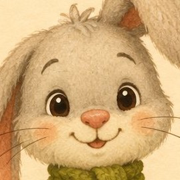

Jejda, tahle cestička nikam nevede
Ouško hledalo všude – pod listím, za kytičkou i u potoka. Tahle stránka tu ale není.
Zpátky do Doupátkova
Ouško hledalo všude – pod listím, za kytičkou i u potoka. Tahle stránka tu ale není.
Zpátky do Doupátkova